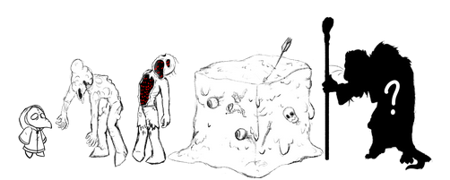

About the project
Pestilent Tides is an RPG made using p5.js. The project was designed with the Makey Makey in mind. Using conductive materials, physical objects representing the weapons in games can be used to trigger attacks, making the combat more immersive and interactive. The game was originally designed around 3 mini bosses with a final boss; however, currently, two enemies have fully implemented attacks, and one has full animations.
Project Development
Developers
Kaz (he/him)
Programmer
Irwin (he/him)
Programmer
Asherr (they/them)
Artist
Concept Art
The idea at first was to create a little RPG in a pixelated 8-bit style. This changed as the asset sketches (which where to be traced in the 8-bit style) looked very nice with semi-solid linework.
The original plan was to reuse old assets Asherr had made for another game, but this quickly changed to a Victorian-styled, bubonic plague take-over. All three of use played with the idea of have PvP but that was soon shot down as we decided we didn't have enough time top dedicate to both PvE and PvP.
The Console
The console itself was designed, hand-sculpted by Asherr and then 3D printed by Irwin. Asherr spent 2 days designing and 3 days sculpting the console, officially named the Med Kit, in Nomad sculpt. The original written idea is on the top left and was retconned to what it is now.
Irwin was then given the files to resize, cut, and 3D print on his Bambu printer. It took around 4 days in total for Irwin to print the pieces. He did a lot of essential editing and resizing.
Asherr and Irwin then came up with the idea to use conductive filament for the tools. To complete the circuit, players must use an item and tap it on the conductive part of the book. This will cause the action in-game to be taken.
Code
Coding for the game started with the second project, Project 2: Collaborative Game Experience. At the time of that project's competition, the game had 1 enemy with identical attacks to the player, a simple menu, 6 attacks, including 2 light, 2 heavy, and 2 special, along with a potion.
Continuing from that, more enemy types have been added, along with a new menu with an enemy select screen, reworked mechanics for player attacks, special enemy afflictions, and compatibility with the Makey Makey controller.
In the end, animations for players and enemies were implemented. Due to both time constraints and the limits of the engine, only one enemy had full animations.
Assets
Asherr had drawn over 150 different pieces of the player character’s body part to achieve very basic png animation. For example: Asherr drew 30 different arm movements (without hands) to reuse for separate actions.
It took a full week of animating just for the player character.
The Enemies were the most fun and simple to design as they were not planned to be as animated as the player character. The Final Boss will remain hidden for fun!

Videos
The idea at first was to create a little RPG in a pixelated 8-bit style. This changed as the asset sketches (which where to be traced in the 8-bit style) looked very nice with semi-solid linework.
The original plan was to reuse old assets Asherr had made for another game, but this quickly changed to a Victorian-styled, bubonic plague take-over. All three of use played with the idea of have PvP but that was soon shot down as we decided we didn't have enough time top dedicate to both PvE and PvP.
The console itself was designed, hand-sculpted by Asherr and then 3D printed by Irwin. Asherr spent 2 days designing and 3 days sculpting the console, officially named the Med Kit, in Nomad sculpt. The original written idea is on the top left and was retconned to what it is now.
Irwin was then given the files to resize, cut, and 3D print on his Bambu printer. It took around 4 days in total for Irwin to print the pieces. He did a lot of essential editing and resizing.
Asherr and Irwin then came up with the idea to use conductive filament for the tools. To complete the circuit, players must use an item and tap it on the conductive part of the book. This will cause the action in-game to be taken.
Coding for the game started with the second project, Project 2: Collaborative Game Experience. At the time of that project's competition, the game had 1 enemy with identical attacks to the player, a simple menu, 6 attacks, including 2 light, 2 heavy, and 2 special, along with a potion.
Continuing from that, more enemy types have been added, along with a new menu with an enemy select screen, reworked mechanics for player attacks, special enemy afflictions, and compatibility with the Makey Makey controller.
In the end, animations for players and enemies were implemented. Due to both time constraints and the limits of the engine, only one enemy had full animations.
Asherr had drawn over 150 different pieces of the player character’s body part to achieve very basic png animation. For example: Asherr drew 30 different arm movements (without hands) to reuse for separate actions.
It took a full week of animating just for the player character.
The Enemies were the most fun and simple to design as they were not planned to be as animated as the player character. The Final Boss will remain hidden for fun!